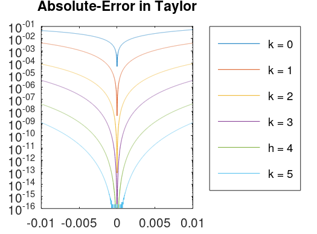

Series de Taylor
Ignacio Sica
06/05/21
Considere la función f(x)=cos(wx). Se quiere construir una gráfica donde quede en evidencia el orden del error al truncar la serie de Taylor. Encuentre una expresión general para la serie de Taylor de la función f entorno a un punto x0. Para cada k=0,1,2,3,4,5, utilizando valore de h=[1e3,9.999e1] (al menos 100), calcule el error absoluto entre la aproximación por una serie trunca y el valor "verdadero" en x1=x0+h con x0=pi/6w y ?=10. Construya una gráfica que contenga todas las función error absoluto para cada k donde se pueda apreciar que cuando k aumenta el error absoluto converge más rápido a cero conforme h tiende a cero. Puede usar la función factorial de octave.
warning('off', 'all'); w = 10; xi = pi/(6*w); h = 0-0.01:0.00001:0+0.01; fk0 = cos(w*(xi)); fk1 = fk0 - (sin(w*(xi)) * w * h.^1) / factorial(1); fk2 = fk1 - (cos(w*(xi)) * w .^ 2 * h.^2) / factorial(2); fk3 = fk2 + (sin(w*(xi)) * w .^ 3 * h.^3) / factorial(3); fk4 = fk3 + (cos(w*(xi)) * w .^ 4 * h.^4) / factorial(4); fk5 = fk4 - (sin(w*(xi)) * w .^ 5 * h.^5) / factorial(5); semilogy(h, abs(fk0 - cos(w * (xi + h)))); hold on; semilogy(h, abs(fk1 - cos(w * (xi + h)))); hold on; semilogy(h, abs(fk2 - cos(w * (xi + h)))); hold on; semilogy(h, abs(fk3 - cos(w * (xi + h)))); hold on; semilogy(h, abs(fk4 - cos(w * (xi + h)))); hold on; semilogy(h, abs(fk5 - cos(w * (xi + h)))); hold on; legend('k = 0', 'k = 1', 'k = 2', 'k = 3', 'h = 4', 'k = 5', "location", "northeastoutside"); title( 'Absolute-Error in Taylor' );
Eric Walter, Springer, Numerical Methods and Optimization
Richard Khoury & Douglas Wilhelm Harder, Springer Numerical Methods and Modelling for Engineering
Gauss–Seidel method, Wikipedia, (https://en.wikipedia.org/wiki/Gauss%E2%80%93Seidel_method)
Norm (mathematics), Wikipedia (https://en.wikipedia.org/wiki/Norm_(mathematics))
Javier Segura, Universidad de Cantabria, Introduccion al analisis numerico (https://personales.unican.es/segurajj/intro.pdf)
Errors for Linear Systems (http://terpconnect.umd.edu/~petersd/460/linsysterrn.pdf)
Inv Function (https://octave.sourceforge.io/octave/function/inv.html)